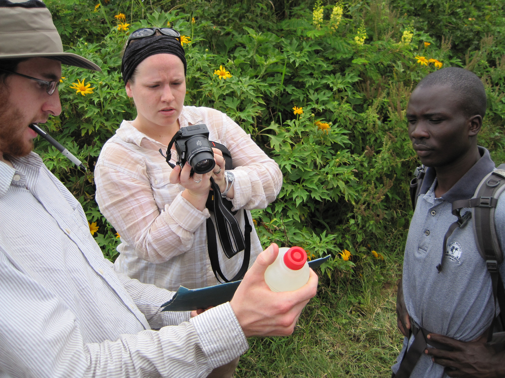
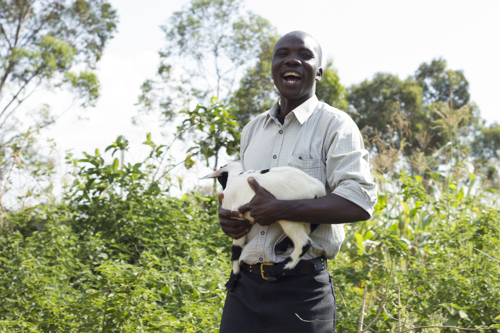
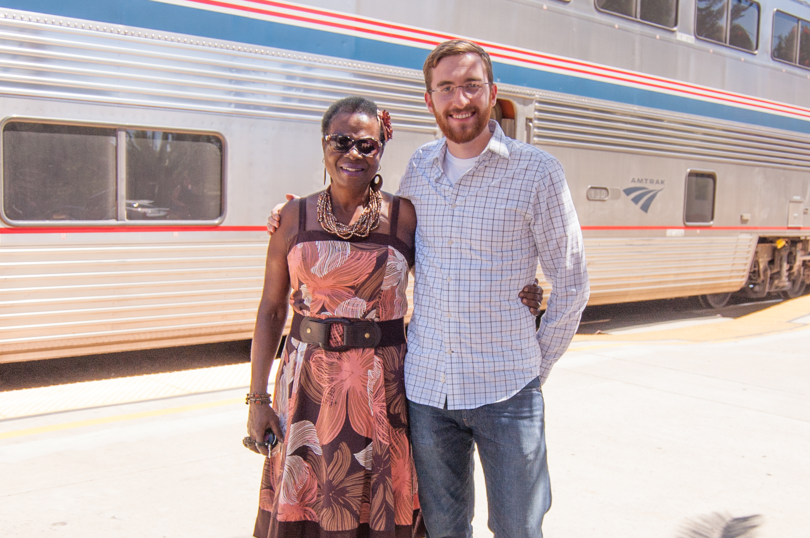

A few words of thanks
POSTED 26 JULY 2013
On September 23 I will embark on a nine-month journey in Kenya. Before I go into too much detail about my plans for those nine months, I'd like to say a few words of thanks to the people in my life who have made this possible.
Let me preface this by saying there isn't a single person in my life who hasn't played a role in helping me get to where I am. Classmates, parents, friends, family, and mentors have all played a role in their own way.
So this list is not comprehensive. Rather it's a window to an entire network of people whom I rely on for support. That said, the following three people have played particularly critical roles that I would like to speak to.
Jaynie
I first met Jaynie three years ago when we started working together with Engineers Without Borders. At the time she was starting a master's degree in environmental engineering. Her interests in water, sanitation, and development led her to volunteer for EWB, where our paths crossed. We got started working on the Lela Community Water Project and were later selected to travel together to Kenya in June 2011.
In many ways I have followed in Jaynie's footsteps. After our return from Kenya, I eventually succeeded her as project coordinator. Around the same time, Jaynie began pursuing a Master of Public Policy to complement her engineering degree; hearing her praise of OSU's MPP program convinced me to do the same. Last but not least, it was Jaynie who introduced me to the Boren Fellowship after she received one last year to travel to Cambodia to learn Khmer and research biosand filters.
I've been learning from Jaynie since the day we met. She is incredibly dedicated to her work and carries an impressive knowledge set. She is also a great friend!
Paul
Paul was born in Nairobi and grew up in Lela, Kenya. He has been my friend since he served as a translator to the Engineers Without Borders travel team I was on in 2011. Paul has no doubt been instrumental in making EWB's work in Lela successful. All four teams we have sent since 2009 have been greeted by Paul in Nairobi, escorted to Lela, then returned safely to the airport at the end of their trip. His sense of humor, general knowledge of Kenya, and welcoming personality have made him a pleasure to work with.
Since my research plan relies on interviewing farmers in rural areas (more on that later), I knew immediately that I would need a translator. It was a no-brainer to me that if I received funding I would offer the job to Paul. After discussing the possibility with him he was even more excited than I was for the chance to work together again. And after I received word that I had indeed been selected for a Boren Fellowship, Paul was one of the first people I called.
When I arrive in Nairobi in September, Paul will be at the airport waiting. He has agreed to be my translator and research assistant, and if past experience is any indicator, we will make an excellent team. Without a doubt he will play a critical role in the success of my research. More importantly, he is a close friend who I place a great deal of trust in. I can hardly wait to see him again!
Roselyn
Last year, I visited San Luis Obispo for an Engineers Without Borders conference. Our chapter was presenting at one of the sessions, and shortly before we were set to begin two women walked in and introduced themselves. Roselyn and her daughter Millie told us they were from Kenya, not far from Lela. We were stunned! As it turns out, there are multiple places in Kenya that share the name Lela, and Roselyn was from Maseno, a village close to another Lela further north in Kenya than where we were working. Regardless, she stayed for our presentation and we spoke at length afterwards.
Roselyn does amazing work supporting an orphanage and two schools in the Kendu Bay region where she is from. She has raised money in California (where she now lives) for basic supplies, mosquito nets, sewing machines, and school fees for girls. Her commitment to her home country inspired me, and after our initial meeting we agreed to keep in touch.
When I told Roselyn about my plans to return to Kenya, she offered to host me at her home in Nairobi for the entirety of my stay. It was an incredibly generous offer and I was happy to accept. Being not far from her in San Francisco, I hopped on the next train I could down to San Luis Obispo to see her again and to make arrangements for my stay. The photo above was taken two weeks ago during my visit.
Jaynie, Paul, and Roselyn have all played (or will play) an important role in helping me achieve my goals in Kenya. I am indebted to them for their support.